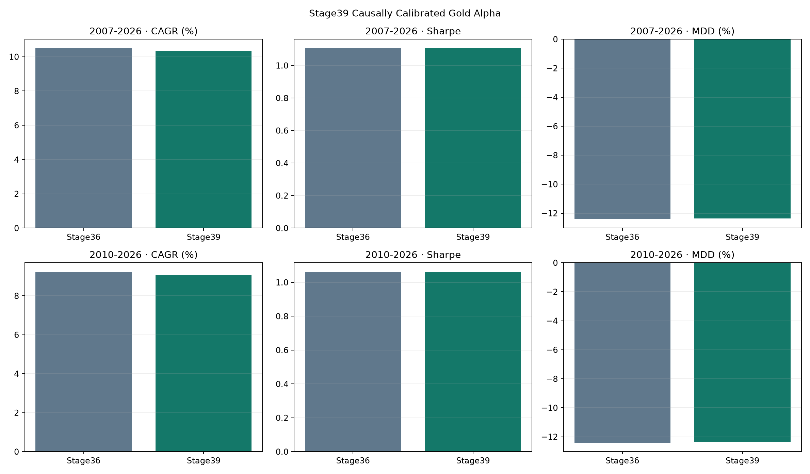
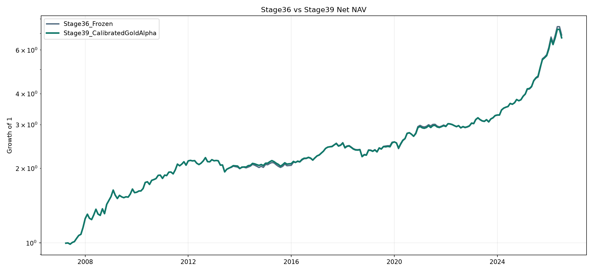

1. 최종 판정
retain_stage36_and_close_gold_alpha_branch
현재 월 이전의 상태와 GLD 수익률만으로 비음 기울기를 재추정한다. 부호·배율·기간 grid는 없다.
2. 전략 구조
실질금리가 낮고 하락하며, 원화가 약하고, USD 금 추세가 강할수록 상태점수가 높다. 현재 상태는 직전 60개월 이상이 있을 때만 거래되고, 과거 GLD 월수익률에 대한 expanding 단변량 기울기로 월간 μ 단위로 바뀐다.
GoldState = mean(RealYieldSupport, FXSupport, GoldTrendSupport) beta_t = max(expanding slope(GoldState_s, GLDReturn_s), 0), s < t DeltaMu_GLD,t = beta_t * causal_z(GoldState_t)
3. 성과
| Strategy | Period | CAGR | Volatility | Sharpe | MDD | AvgTurnover | TotalCost |
|---|---|---|---|---|---|---|---|
| Stage36_Frozen | full_2007_2026 | 10.499% | 9.472% | 1.1049 | -12.407% | 3.698% | 2.654% |
| Stage36_Frozen | common_2010_2026 | 9.232% | 8.719% | 1.0592 | -12.407% | 2.795% | 1.809% |
| Stage36_Frozen | locked_2018_2026 | 12.626% | 10.178% | 1.2235 | -11.931% | 2.616% | 0.869% |
| Stage39_CalibratedGoldAlpha | full_2007_2026 | 10.350% | 9.324% | 1.1064 | -12.368% | 4.200% | 3.059% |
| Stage39_CalibratedGoldAlpha | common_2010_2026 | 9.060% | 8.529% | 1.0625 | -12.368% | 3.380% | 2.215% |
| Stage39_CalibratedGoldAlpha | locked_2018_2026 | 12.328% | 9.901% | 1.2282 | -11.860% | 3.245% | 1.102% |

4. NAV

5. 메커니즘 회귀
| Period | HorizonMonths | Observations | StandardizedBeta | HACPValue | SpearmanIC |
|---|---|---|---|---|---|
| full_2007_2026 | 1 | 181 | 0.007440 | 0.044169 | 0.083304 |
| full_2007_2026 | 3 | 179 | 0.022582 | 0.002321 | 0.251614 |
| full_2007_2026 | 6 | 176 | 0.040237 | 0.000388 | 0.359177 |
| common_2010_2026 | 1 | 181 | 0.007440 | 0.044169 | 0.083304 |
| common_2010_2026 | 3 | 179 | 0.022582 | 0.002321 | 0.251614 |
| common_2010_2026 | 6 | 176 | 0.040237 | 0.000388 | 0.359177 |
| locked_2018_2026 | 1 | 103 | 0.005693 | 0.139103 | 0.088521 |
| locked_2018_2026 | 3 | 101 | 0.018827 | 0.029285 | 0.179977 |
| locked_2018_2026 | 6 | 98 | 0.020922 | 0.112885 | 0.128818 |
6. 12개월 블록 부트스트랩
| Period | Metric | Mean | P05 | P50 | P95 | ProbabilityPositive |
|---|---|---|---|---|---|---|
| full_2007_2026 | delta_CAGR | -0.001559 | -0.005231 | -0.001453 | 0.001717 | 0.2485 |
| full_2007_2026 | delta_Sharpe | 0.002171 | -0.024109 | 0.001865 | 0.030280 | 0.5515 |
| full_2007_2026 | delta_MDD | 0.001347 | -0.003161 | 0.000389 | 0.010228 | 0.6860 |
| common_2010_2026 | delta_CAGR | -0.001857 | -0.006276 | -0.001669 | 0.002007 | 0.2300 |
| common_2010_2026 | delta_Sharpe | 0.003785 | -0.030147 | 0.003203 | 0.039897 | 0.5665 |
| common_2010_2026 | delta_MDD | 0.001479 | -0.003797 | 0.000400 | 0.010679 | 0.7130 |
7. 인과성과 통제
- 목표 월에는 직전 월말까지의 KTB10Y, 공개 CPI, USDKRW, GLD만 사용
- 현재 월 이후 수익률은 calibration에 포함하지 않음
- 60개월 전에는 μ 조정 0
- 원자료와 Stage36 hash 실행 전후 비교
- long-only, no leverage, 13% vol·−16% CDaR guard 유지
8. 파일
calibrated_gold_alpha_slsqp.py, outputs/stage39_calibratedgoldalpha_monthly.csv, outputs/validation_report.json
9. 주의
동일한 역사에서 Stage38의 메커니즘을 확인한 뒤 Stage39의 calibration을 설계했으므로 완전한 외부표본은 아니다. 2018 잠금구간과 부트스트랩을 별도로 공개하지만 미래 성과를 보장하지 않는다.